This was the best book I’ve read among those published in recent years. I particularly enjoyed the way the story was structured. I imagine it can’t be easy to construct a narrative made up of interconnected stories spanning three hundred years. And exploring similar situations and emotions across different periods in each of these stories makes the task even more complicated.
I love reading books that allow us to see events through the lives of different characters and from shifting perspectives. This book offers plenty of that. We encounter different interpretations of the same events and witness how people living centuries apart can experience remarkably similar emotions. With its Gothic atmosphere, it was also a perfect read for October. Some parts of the book were quite disturbing, but because they served a purpose within the larger narrative, the discomfort they initially created gradually gave way to other emotions as I continued reading.
Although we catch glimpses of Eliza May Drayden’s life in every story, the other characters are just as important. None of them exist merely to serve Eliza’s story. They all have stories of their own, and each one is just as worthy of being told as that of the famous Eliza. The book makes every character we encounter feel significant. Their stories may not be the ones being told, but you get the sense that each of them has a story of their own, even if it remains untold.
Two themes in particular stood out to me: death and time.
I haven’t yet lost anyone close to me, so loss and grief aren’t emotions I’ve experienced firsthand. In the book, however, people are constantly losing their loved ones. Some lose their children, others their siblings... Eventually, they die too, and new people take their places. As one story ends, another begins. Throughout the book, we encounter death again and again, constantly reminded of its presence.
Neither the grief that follows someone’s death nor the fear of death itself has occupied much space in my life, at least not yet. I couldn’t really find anything in common with the emotions of the grieving characters, but I kept encountering something that I know I, too, will one day share with them. I don’t mean that the book left me feeling pessimistic or made me start looking at life through the lens of death. It was more like recognizing something we all have in common, even if I haven’t experienced it myself yet.
Lately, almost everything I watch or read seems to give me something to think about regarding reality. Or perhaps I’ve been unconsciously drawn to works that explore these questions. I’m not sure. This time, the book led me to reflect on reality and the relativity of time.
Toward the end of the book, Ties Auwerda’s relationship with time and his experiments reminded me of people who have isolated themselves in caves to study their perception of time. In these experiments, people spend hundreds of days cut off from the outside world, yet when they emerge, they believe much less time has passed than actually has. But shouldn’t it be the other way around? I would have expected that, without any connection to the outside world, time would feel as though it were passing more slowly, making their stay seem much longer than it actually was.
I find it fascinating to think about the difference between time itself and the way we experience it. We can measure time, divide it into days, months, and years, but the way we perceive it can vary from person to person, or even between different periods of the same person’s life. Although time moves at the same pace on our clocks, the time we experience doesn’t. A single moment can sometimes seem to stretch on forever, while entire years can pass in the blink of an eye. Perhaps what matters isn’t so much how quickly time passes, but how we experience it and how vividly we manage to preserve it in our memories.
This was my first book by Anjet Daanje. She has another book called The Remembered Soldier, which I’ve already added to my reading list. I hope The Song of Stork and Dromedary gets translated into Turkish soon. I’d love to read it again in Turkish.

I’m not someone who regularly reads poetry. I don’t actively seek it out, but when I happen to come across it, I’ll give it a try. I came across Falling Toward the Moon at a Little Free Library, and I discovered this book in much the same way.
I doubt this book will leave a lasting impression on me, but it did spark an interest in reading more about writing. I liked that it inspired me to explore something new, though not necessarily because I was particularly moved by the book itself. I’m not entirely sure what it was about the book that made me feel this way. Maybe it was simply the fact that poetry plays such a central role in the author’s life.
Another thing I appreciated about the book was how it introduced me to figures who are part of America’s collective cultural memory. Just as people who grew up in Turkey are generally familiar with the name Cemal Süreya, Walt Whitman holds a similar place in American culture. This is one of the reasons I enjoy reading books like this. They help me become more familiar with the cultural figures and references of a society I became part of later in life.
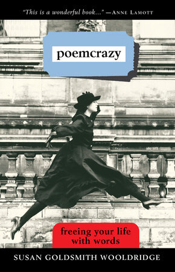
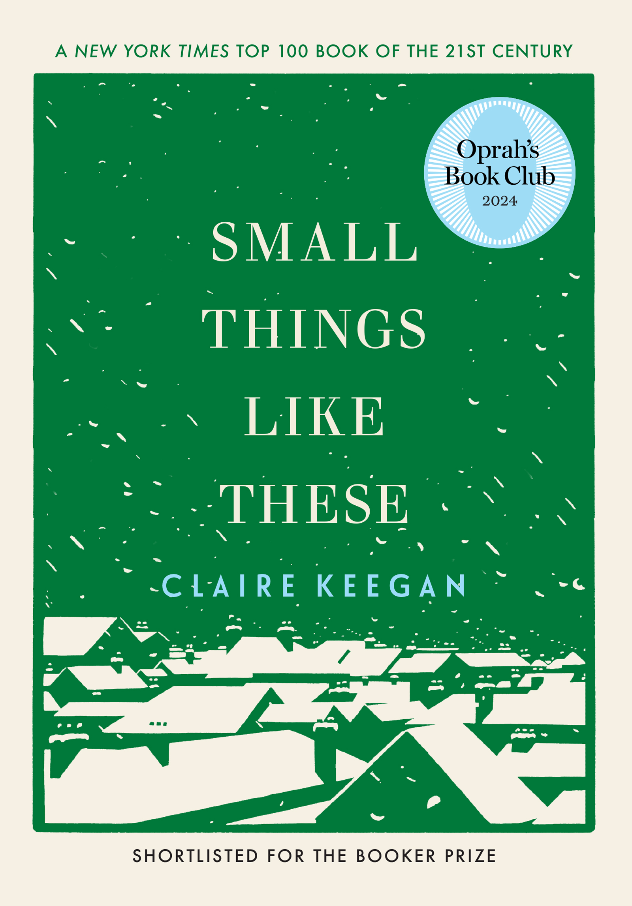
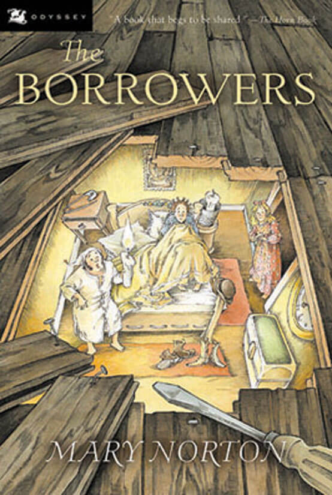

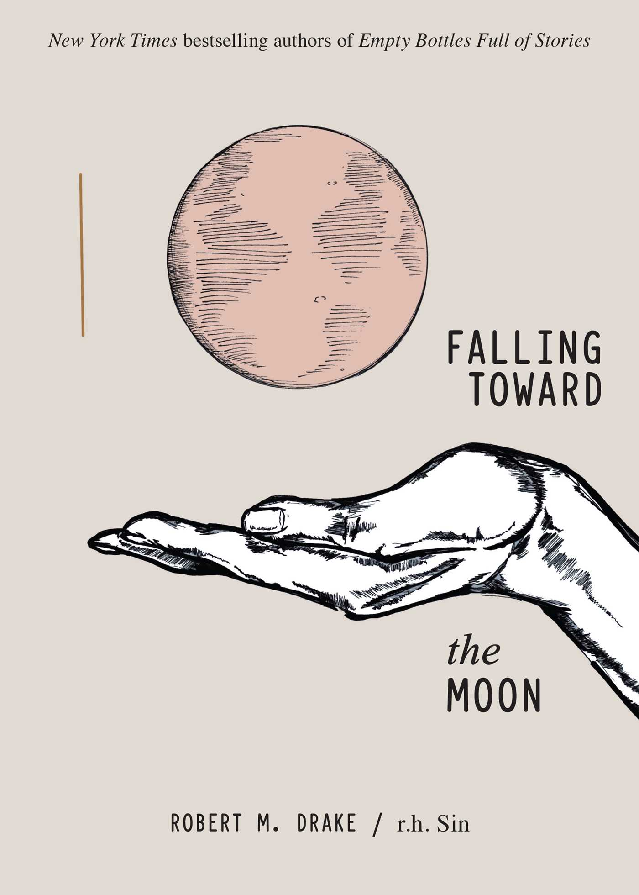
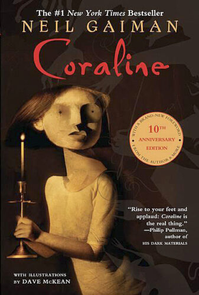
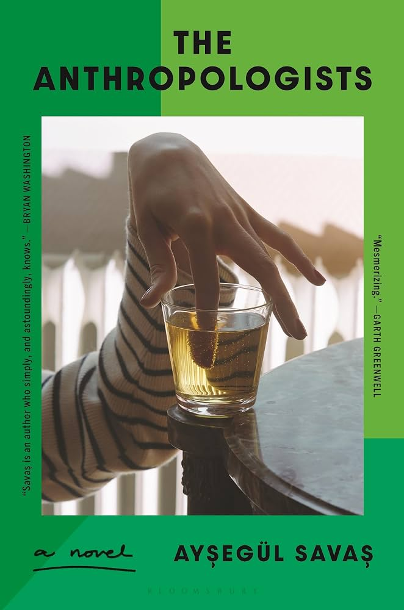
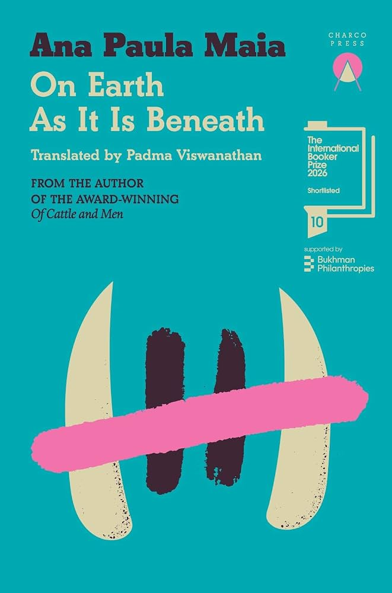
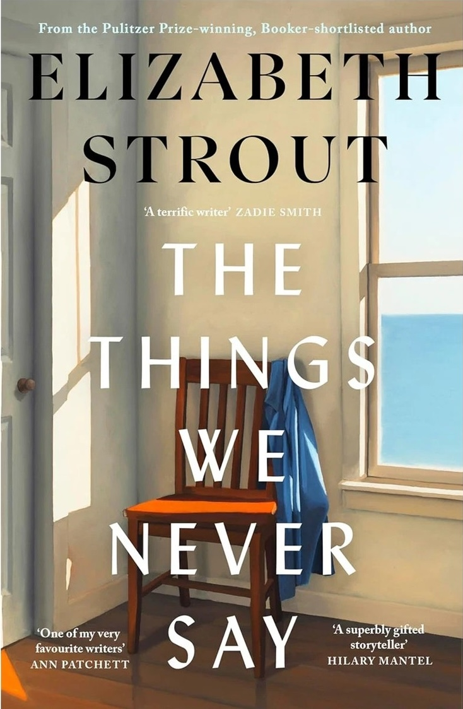
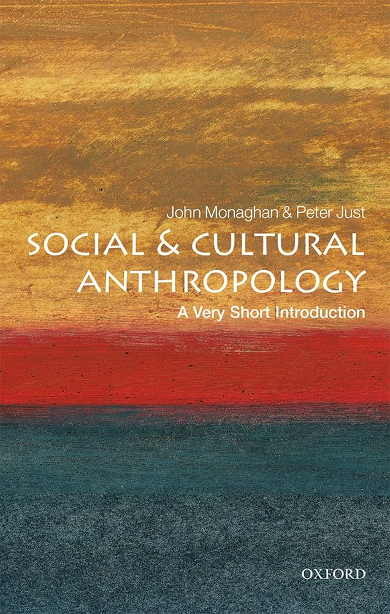


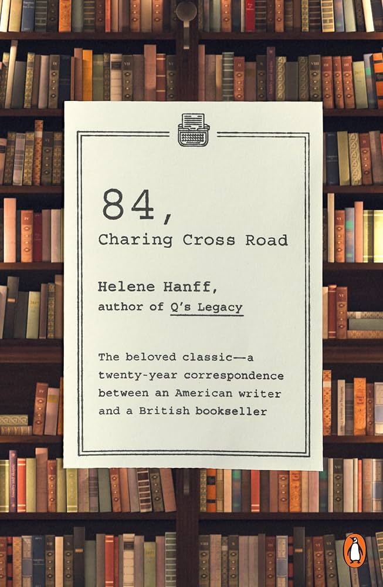
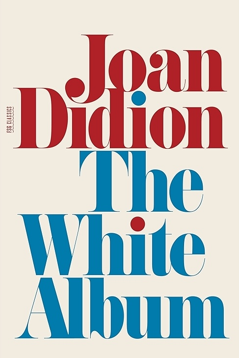
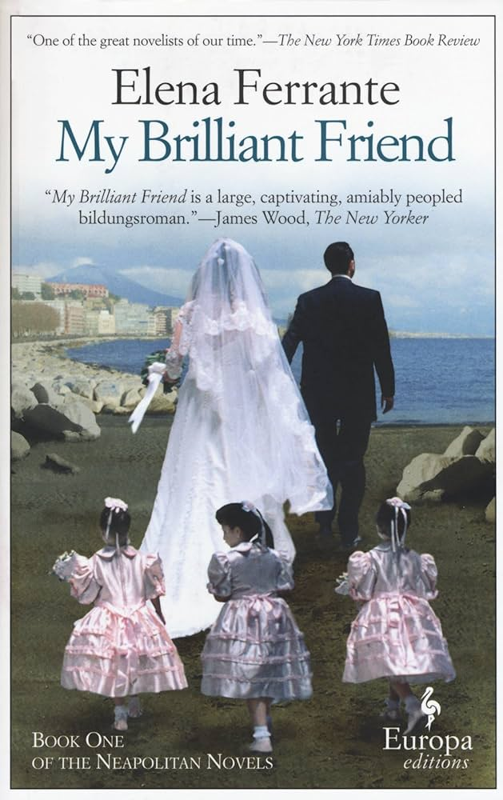
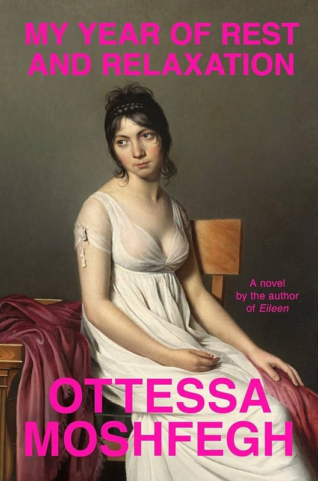
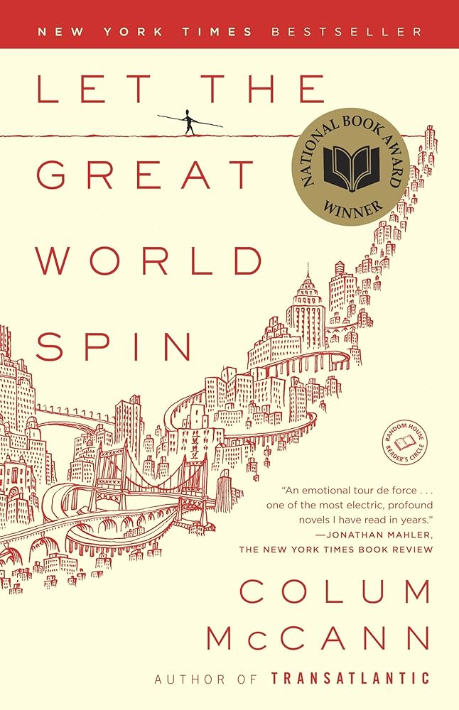
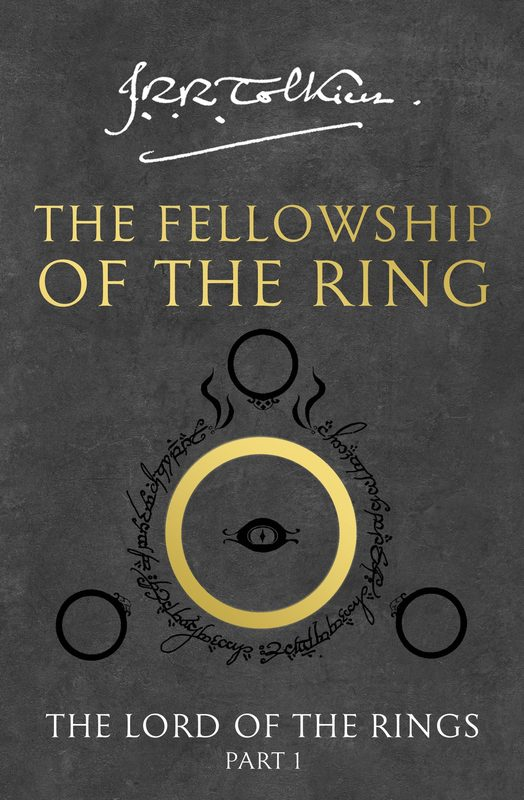